¿Qué es So d'arrel?
Este proyecto ha consistido en el estudio del paisaje sonoro del pasado del Campello. A partir de fuentes iconográficas, entrevistas y material recogido de la bibliografía existente hemos realizado una recreación y geolocalización de los sonidos más idiosincráticos.
.jpg) 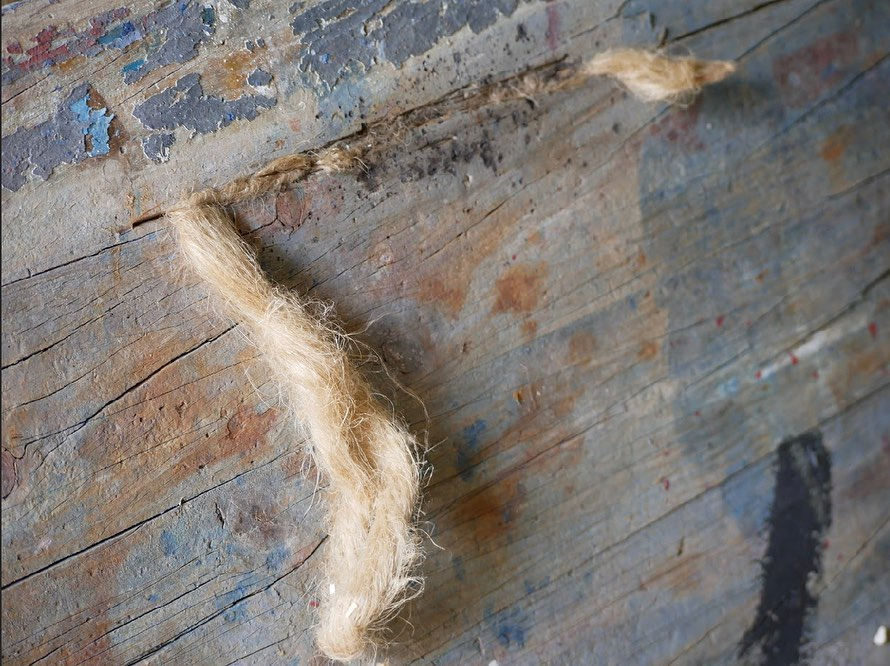
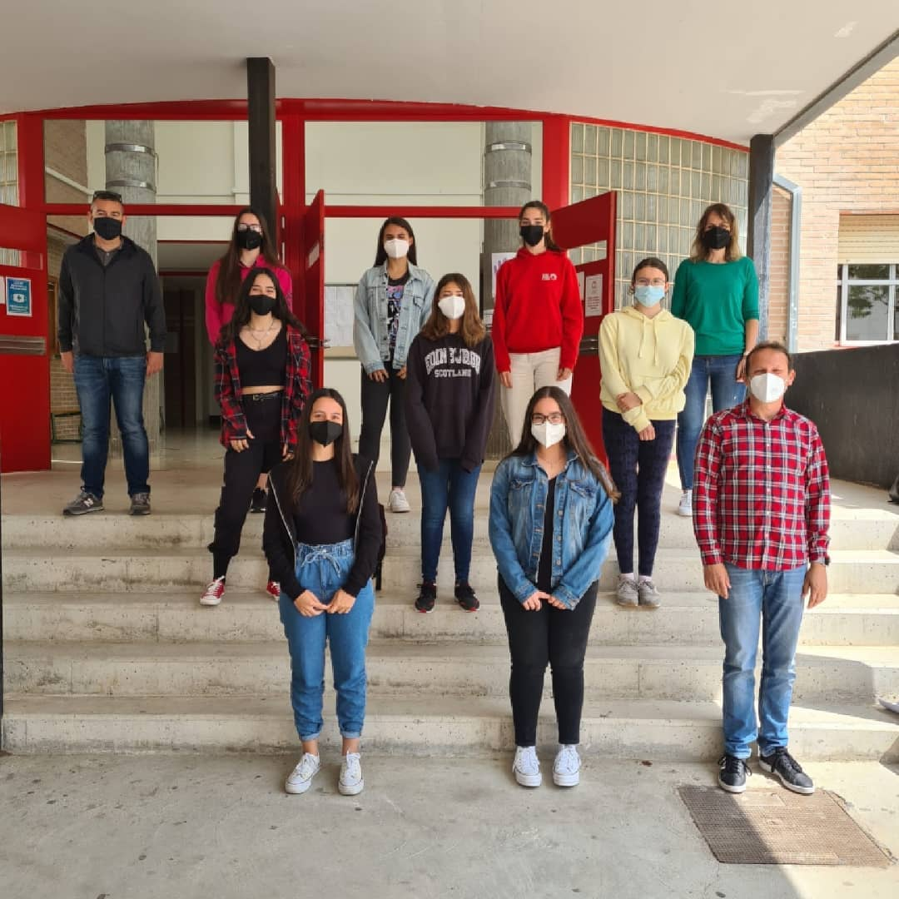
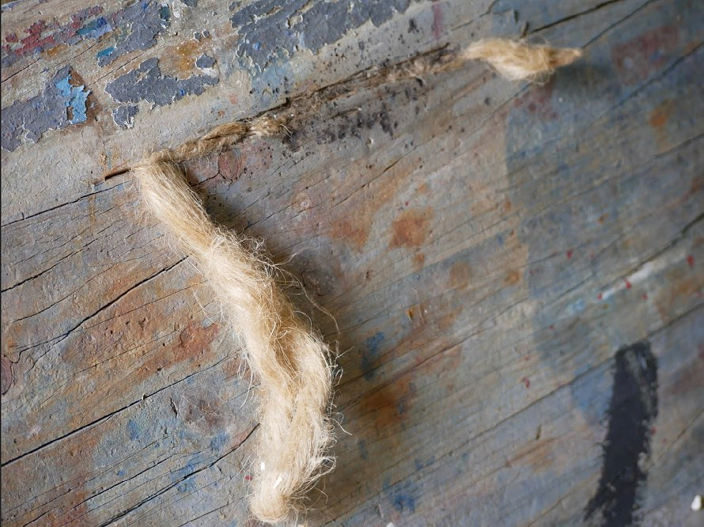
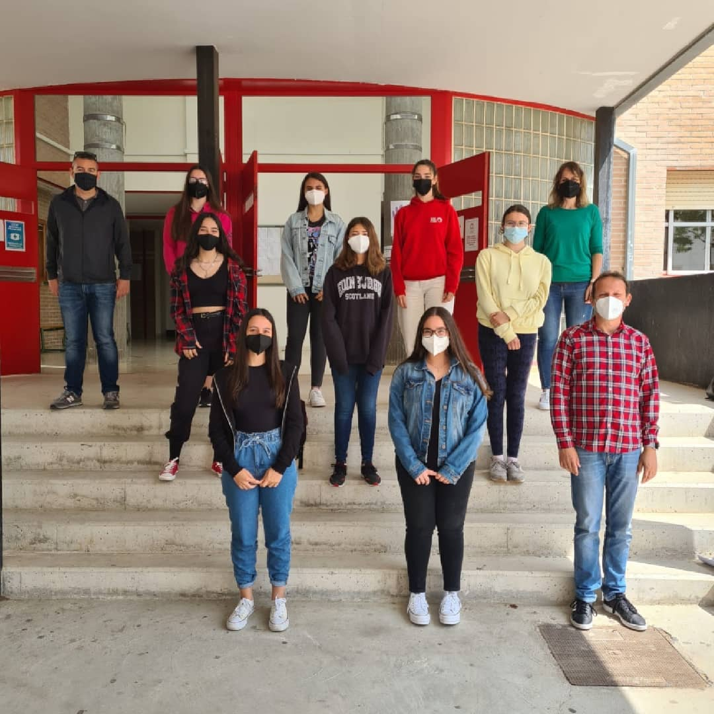
Con el objetivo de mostrarlos en una página WEB.
Para poder llevarlo a cabo, el alumnado ha realizado diversas prácticas de grabación, edición y producción sonora, tanto con artistas de cierto renombre como con sus profesores, que también les han guiado para diseñar tanto los paisajes sonoros como ilustraciones basadas en fotografías antiguas, iconos de los hot spots, y un mapa ilustrado en el que se organiza la cartografía sonora.
El reto más duro, y más pesado, ha sido la creación, por parte del alumnado, de la propia página web en la que se muestran los resultados obtenidos, utilizando HTML, CSS y JavaScript. Y a su vez, optimizando código para que dichos resultados se muestren correctamente en cientos y miles de dispositivos, además de traer pequeños detalles que facilitan la navegación por la web y agradan al usuario, quedando este satisfacho por la página web.
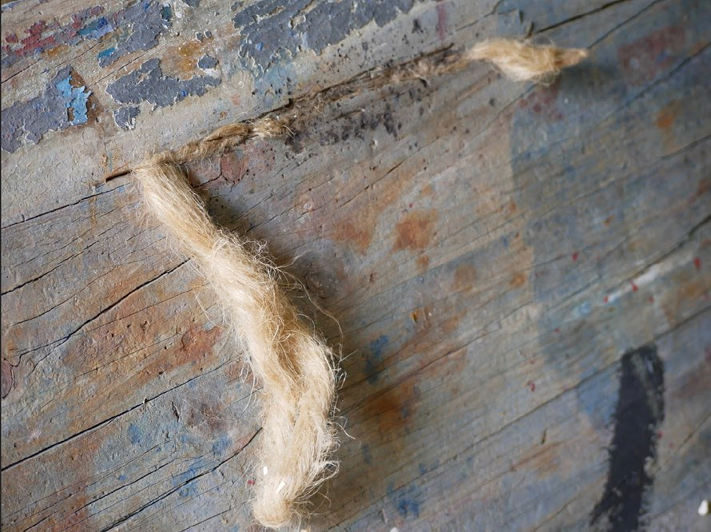
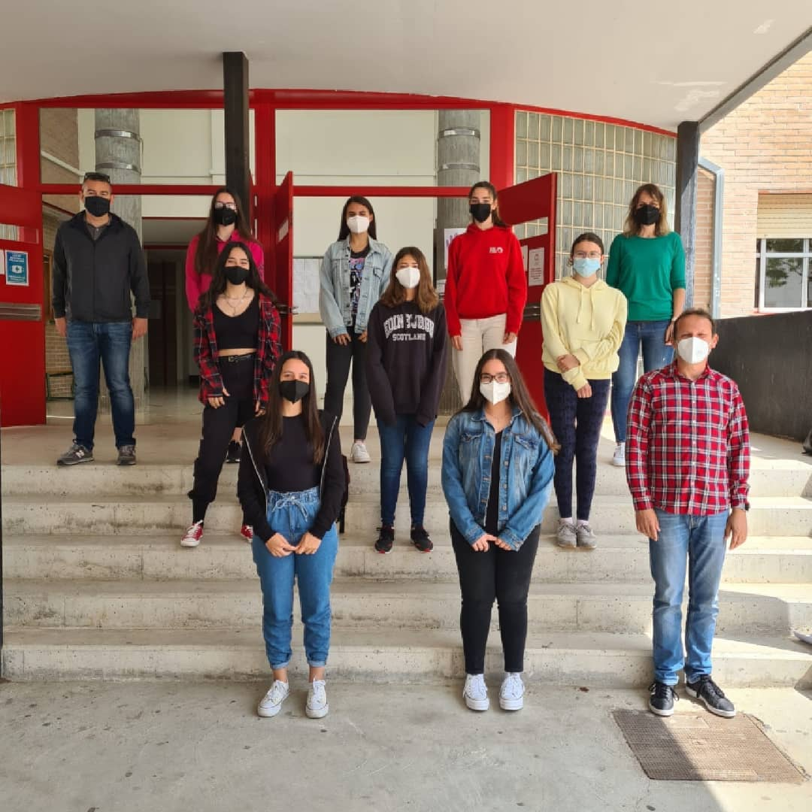
Con el objetivo de mostrarlos en una página WEB.
Para poder llevarlo a cabo, el alumnado ha realizado diversas prácticas de grabación, edición y producción sonora, tanto con artistas de cierto renombre como con sus profesores, que también les han guiado para diseñar tanto los paisajes sonoros como ilustraciones basadas en fotografías antiguas, iconos de los hot spots, y un mapa ilustrado en el que se organiza la cartografía sonora.
El reto más duro, y más pesado, ha sido la creación, por parte del alumnado, de la propia página web en la que se muestran los resultados obtenidos, utilizando HTML, CSS y JavaScript. Y a su vez, optimizando código para que dichos resultados se muestren correctamente en cientos y miles de dispositivos, además de traer pequeños detalles que facilitan la navegación por la web y agradan al usuario, quedando este satisfacho por la página web.
Después de un taller de diseño coorporativo hemos creado la marca “So d’Arrel”, que da nombre a la propia página web.
Dentro del mismo proyecto y gracias a la colaboración de las Concejalías de Turismo, Educación y Cultura del Ayuntamiento de El Campello, hemos podido dotar al pueblo con 7 paneles informativos que recogen parte de la información generada, y que mediante un código QR te remite a la misma página WEB con el fin de completar la información expuesta en los mismos.
 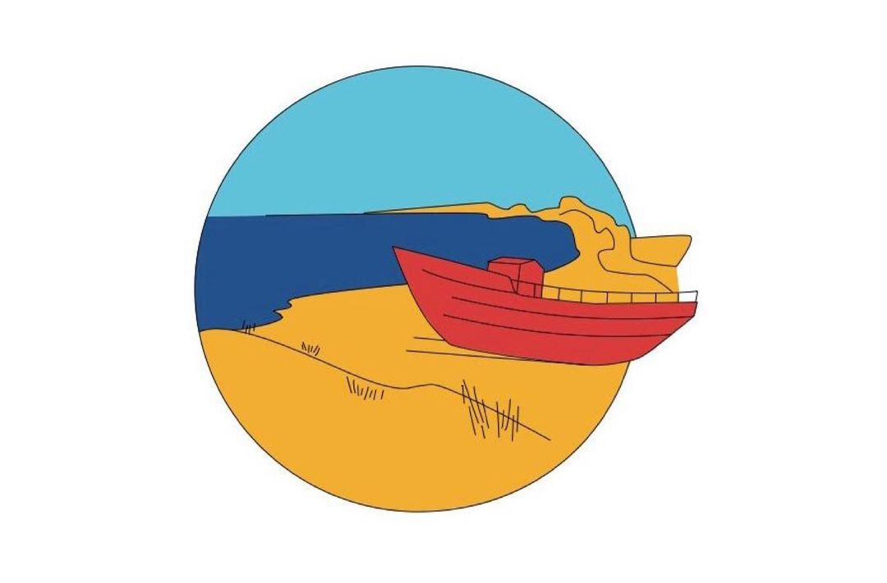
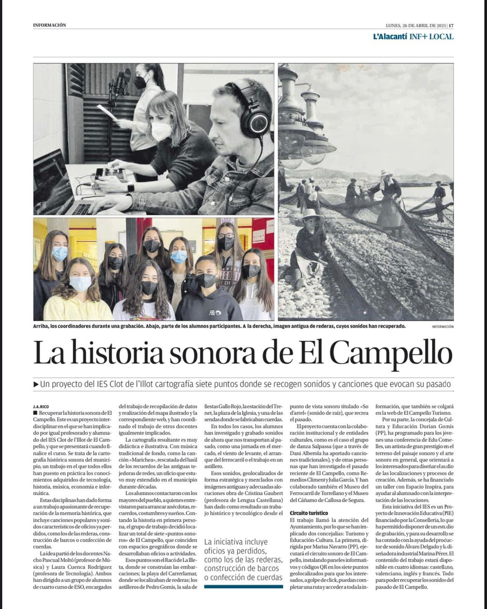
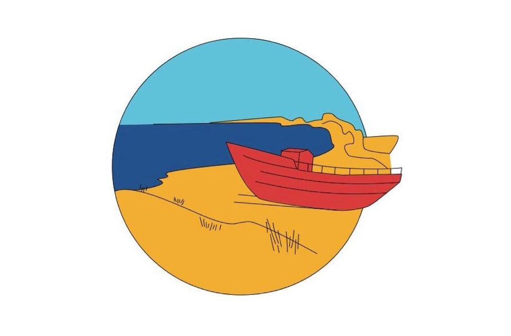
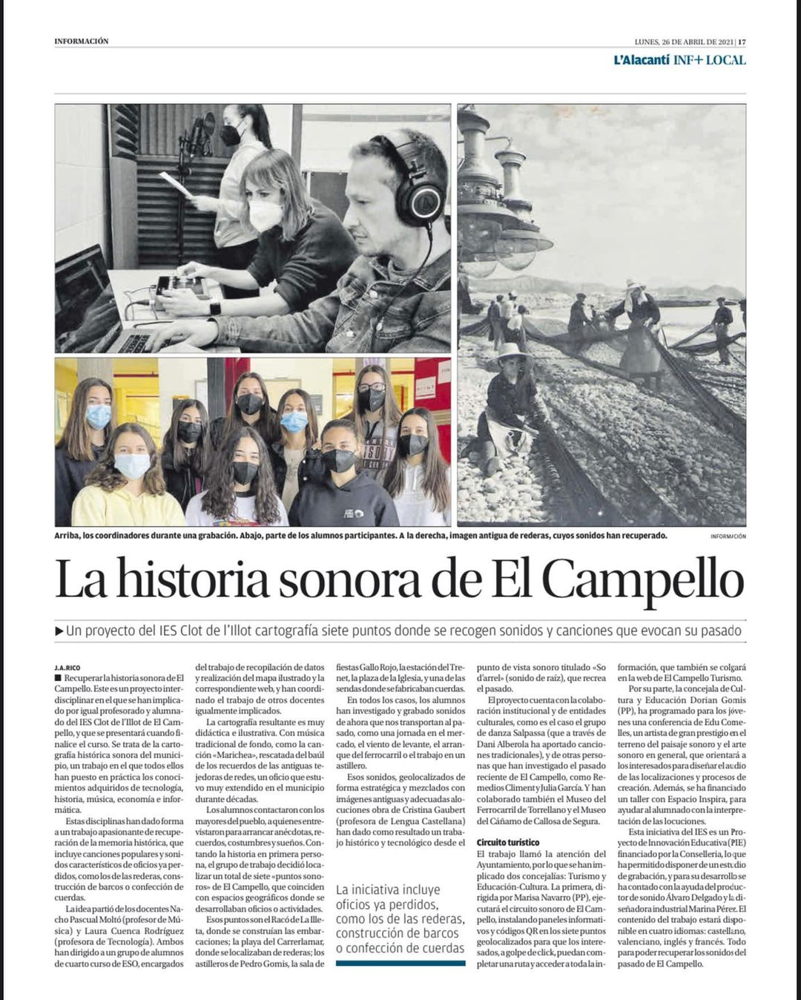
Visto el interés y la motivación observada en el alumnado, el profesorado participante en el proyecto valoramos de forma muy positiva las diferentes metodologías empleadas, tanto de aprendizaje cooperativo, multidisciplinar y aprendizaje servicio, ya que el alumnado ha sido capaz de entender el proceso necesario para llevar a buen término la realización de una investigación a partir del método científico y sociológico, así como de aunar intereses y aptitudes con un objetivo común.
Dentro del mismo proyecto y gracias a la colaboración de las Concejalías de Turismo, Educación y Cultura del Ayuntamiento de El Campello, hemos podido dotar al pueblo con 7 paneles informativos que recogen parte de la información generada, y que mediante un código QR te remite a la misma página WEB con el fin de completar la información expuesta en los mismos.
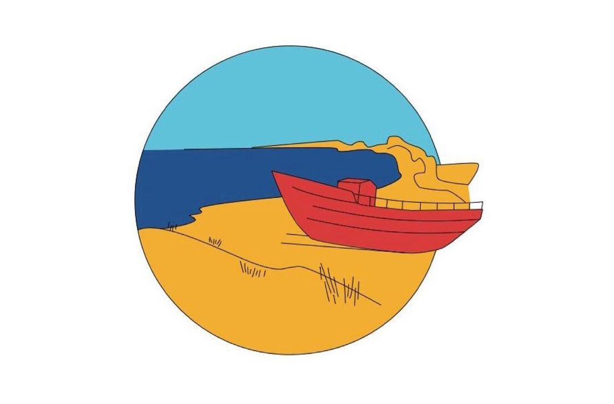
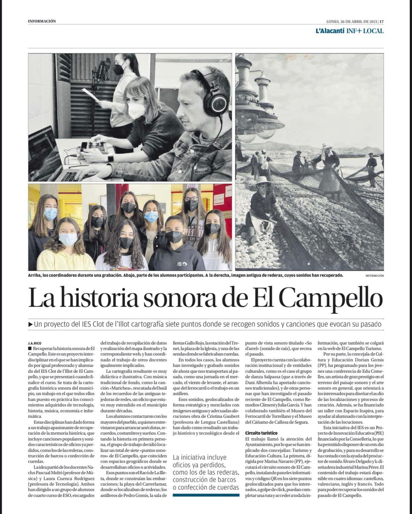
Visto el interés y la motivación observada en el alumnado, el profesorado participante en el proyecto valoramos de forma muy positiva las diferentes metodologías empleadas, tanto de aprendizaje cooperativo, multidisciplinar y aprendizaje servicio, ya que el alumnado ha sido capaz de entender el proceso necesario para llevar a buen término la realización de una investigación a partir del método científico y sociológico, así como de aunar intereses y aptitudes con un objetivo común.
Agradecimientos
/TURISMO.png)
/Educacion.jpg)
/logo barxell.jpg)
/museo.jpg)
/AMPA.png)
- emmm... Sí. Me echas un cable copiando?
- Web por obra y revisión de Iván Parkhomchyk
- Colaboradores Web: Simón Hudec
- Colaboradores Web: Teresa Lanuza
- Colaboradores Web: Moisés Segura
- Ilustraciones digitales de las localizaciones: Daya Ortega
- Iconos de localizaciones: Anna María Crocella
- Mapa ilustrado: Virginia Torrejón
- Abre el apatado personas y aplícalo aquí
- Laura Cuenca
- Ignacio Pascual
- Giner i Parodi: A la vora del mar
- Climent, R. (1995): El Campello , mi pueblo.